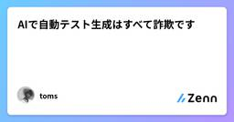
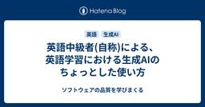
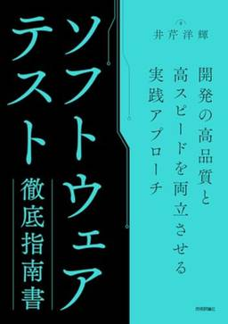
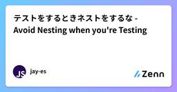
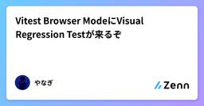
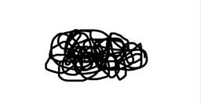

直近1週間の更新
8/16 (土)
魅力的品質を上げるために何を考えたらいいのか  Zennの「QA」のフィード
Zennの「QA」のフィード
導入自社製品の品質を上げたいと思ってネットの情報を探しにいくと、当たり前品質・魅力的品質という考えを目にすることがあると思います。魅力的品質を上げていきたいと考える人が多いと思うが、自社製品がどのレベルにあるのか？どうしたらそれぞれの品質が上がるのか？の把握は難しいと感じているのではないでしょうか？この点についていったんの結論が出たので残しておきます。 誰に充てて書くか機能の仕様や対応方針を決めるPDMやマネージャー、品質に深く関わるQAエンジニア等 結論先に結論を書くと僕は以下のように理解しています。当たり前品質、魅力的品質どちらもユーザー（顧客）から見た品質...
10時間前
ドメイン分析テストってなに？ Zennの「Test」のフィード
はじめに今回はテスト技法の一つ『ドメイン分析テスト』についてまとめてみようと思います。 ドメイン分析テストとはこのテスト技法は、出力が複数の変数の値の組み合わせにより変わるこの時の境界値ごとの振る舞いを効率的に検証する検証対象の境界値以外は全て有効値にするこう言ったテスト技法になります。検証の際は、onoffinoutと言う4つの概念を用います。onは『着目した境界値変数』、offは『onポイントに近傍するもう一つの境界値変数』、inは『有効値』、outは『無効値』になります。onとoffが若干分かりづらいので、以下に具体例を交えて図式化し...
12時間前
ドメイン分析テストってなに？  ソフトウェアテストタグが付けられた新着記事 - Qiita
ソフトウェアテストタグが付けられた新着記事 - Qiita
はじめに今回はテスト技法の一つ『ドメイン分析テスト』についてまとめてみようと思います。ドメイン分析テストとはこのテスト技法は、出力が複数の変数の値の組み合わせにより変わるこの時の境界値ごとの振る舞いを効率的に検証する検証対象の境界値以外は全て有効値にする...
13時間前
8/15 (金)

AIで自動テスト生成はすべて詐欺です Zennの「Test」のフィード
今日, AIエージェントを使ったコード生成はかなり一般的になってきました. それにともなって, AIを使って自動テストを生成するといった事例も増えてきました.https://x.com/toms74209200/status/1955849297590616088AIを使った自動テスト生成の対象となるテストはいわゆる開発者テストと呼ばれるプロダクトコードと対応するテストのはずです. 2025年8月現在, これらのテストをAIを使って手放しに生成できません.この記事ではAIによる自動テスト生成の問題点を挙げ, AIを使ったテスト設計の可能性について考察します. AIによる自動テス...
1日前
正解のないテストに挑む ― AIエージェントQAの試行錯誤と学び Zennの「QA」のフィード
!要約AIエージェントの品質保証という正解のない領域で、TOKIUMのQAチームが実践した試行錯誤の記録です。リスクベースドテストやランダム命令生成ツールなど、4つのブレークスルーと3つの失敗から得た学びを共有します。従来のQA手法が通用しない中で見つけた、新しい品質保証のアプローチとチーム運営の重要性についてお話しします。こんにちは！TOKIUMでQAチームのリーダーをしている西田です。6月にnoteにて、AIエージェントの品質保証という未知の領域への挑戦について、私たちが直面している課題と取り組みの方向性をお話しさせていただきました。前回の記事はこちらあれから数ヶ月...
1日前

テスト設計とは何か、なぜ重要なのか?  Ranorex Blog - UIテスト自動化ツール Ranorex
Ranorex Blog - UIテスト自動化ツール Ranorex
ソフトウェア開発において、テストの品質はしばしばアプリケーションの品質を左右します。しかし、テストはソフトウェアそのものと同じくらい複雑になりえます。適切に設計されていないテストでは、欠陥が検出されず、セキュリティの脆弱 […]The post テスト設計とは何か、なぜ重要なのか? first appeared on UIテスト自動化ツール Ranorex.
2日前

英語中級者(自称)による、英語学習における生成AIのちょっとした使い方 ソフトウェアの品質を学びまくる
日ごろ、英語のちょっとしたお勉強に生成AIをどう使っているかをご紹介します。 わたしは生成AI使いこなしマンってわけでもないので、ちょっと恥ずかしいのですが。 ざっくりと、3つあります。 語幹を調べる 意味の違いを調べる 英文を添削してもらう 1. 語幹を調べる 「英語のボキャブラリーを強化する」なんて目的がなくても、単語における「語幹」というのは面白いものです。 よく例に出るのが「philosophy」（哲学）。philoは「愛する」でsophyは「知恵」なので、philosophyは「知恵を愛する」ことであり、愛知県のことでもあります。 「Mesopotamia」（メソポタミア）もいいです…
2日前
QA内製化による品質改善と学習循環の作り方  くぼぴー
くぼぴー
こんにちは。kubopです。今回は品質の内製化について書こうと思います。私が今の会社に入ったとき、品質保証の一部は外部パートナーの方々にお願いしていました。プロジェクト終盤に集中的にテストをしてもらう形です。これは当時の規模や状況に合った判断だったと思いますし、外部の知見や網羅性には確かな価値がありました。ただ、私は入社前から「品質はチームの中でつくる方が、アジリティも学びも大きい」と感じていました。続きをみる
2日前
【Go】Goのテストに入門してみた！ ~テーブル駆動ベンチマークテスト編~ Zennの「Test」のフィード
はじめに前回は「ベンチマーク」を見ていきました。今回は「テーブル駆動ベンチマークテスト」に入門します。前回の記事はこちら！https://zenn.dev/tmyhrn/articles/fd7e9de821e631 この記事でわかることテーブル駆動テストをベンチマークテストで活用する方法テーブル駆動ベンチマークテストのメリットと不要なケース テーブル駆動ベンチマークテスト前回の記事で、文字列結合についてのベンチマークをとりました。今回はそれをテーブル駆動テストで実行してみます。main_test.gopackage mainimport (...
2日前
8/14 (木)
パフォーマーとして人の心を動かし、ポジティブに生きることで見る人の人生を後押しする PTW／ポールトゥウィン【公式】
ポールトゥウィンと雇用契約を結び、プロとして活動するパラパフォーマー®️「Team PTW（チーム・ピー・ティー・ダブリュー）」。彼らと対談するのは、モデル・ダンサーといった多様なフィールドを横断しながら、自らの思想を形にするプロジェクト「FLATLAND」を設立した森田美勇人（もりた・みゅうと）さん。前回は、Team PTW誕生の背景や、優和とHARUKIそれぞれの個性にフォーカスしました。今回の後編では、パラパフォーマーとして活動することの意味や可能性、そしてこれから描いていく未来について語り合ったセッションの模様をお届けします。（第一回の記事はこちらからご覧いただけます）続きをみる
2日前
2025年8月26日 事例セミナー開催 「テスト管理の新常識：パナソニック コネクト直伝！エクセル管理の限界を突破するTestRail活用術」 Ranorex Blog - UIテスト自動化ツール Ranorex
概要 本セミナーは、Ranorexと連携が可能なテスト管理ツール「TestRail」の事例セミナーです。 パナソニック コネクト様をお招きして、第三者検証の現場で直面していたエクセル管理によるテスト管理の限界といった課題 […]The post 2025年8月26日 事例セミナー開催 「テスト管理の新常識：パナソニック コネクト直伝！エクセル管理の限界を突破するTestRail活用術」 first appeared on UIテスト自動化ツール Ranorex.
2日前

『ソフトウェアテスト徹底指南書』、鉛のごときその濃密さ 1 ソフトウェアの品質を学びまくる
1 ソフトウェアの品質を学びまくる
「噛めば噛むほど味が出るスルメのような」 という比喩は、しばしば書籍にも用いられます。最初に読んだ時にはすっと通り過ぎてしまったけれど、少し経験を積んで読み直してみると、「この何気ない一言は、そういうことだったのか！」 と合点してしまうような本です。 なぜ、そのような本が生まれるのか。 それは、その本の記述が、「ネットで調べたことをまとめてみました！」ではなく、徹底した実践と経験に裏付けられているからでしょう。そのため、読む側の経験値が増えると、著者の意図がストレートに伝わってきて、その経験を追体験できるのです。 2025年6月、井芹洋輝（@goyoki）さんの『ソフトウェアテスト徹底指南書』…
3日前
8/13 (水)

PRごとのテスト生成を支援するJust in Time Testという仕組み 122 QA - freee Developers Hub
QA - freee Developers Hub
こんにちは、freeeで支出管理領域のQAマネージャーをしているrenです。 今回は、支出管理領域のCIパイプラインにJust in Time Test（JiT Test）という仕組みを試験的に導入している話をします。 Just in Time Testとは PR作成時に、LLMを活用して生成するジャストインタイムなテストのことを指します。 MetaのMark Harman、Peter O'Hearn、Shubho Senguptaらが提唱している「Assured LLM-Based Software Testing」という研究領域に基づくものです。 論文「Harden and Catch f…
4日前
【Go】Goのテストに入門してみた！ ~ベンチマーク編~
Zennの「Test」のフィード
はじめに前回は「カバレッジ」を見ていきました。今回は「ベンチマーク」に入門していきます！前回の記事はこちら！https://zenn.dev/tmyhrn/articles/93c20bcd2c3442 この記事でわかることベンチマークとは何かGoのベンチマークテストの書き方ベンチマークテスト結果の見方 ベンチマークとは？ベンチマークとは、プログラムの処理性能（速度やメモリ使用量）を数値的に測定する方法です。Goでは、testingパッケージ を使って、関数の実行時間やメモリ消費量、アロケーションの頻度を自動で計測できます。ベンチマークを使うことで、...
4日前
8/12 (火)
チームが"挑戦し続ける"には、自ら"失敗し続ける" くぼぴー
こんにちは、kubopです。「失敗しない」ことを目指すのは、安全なようで危険な選択です。うまくやろうとした結果、失ったものはありませんか？私はそれに気づき、うまくやることをやめました。うまくやることをやめる続きをみる
5日前
8/11 (月)

テストをするときネストをするな - Avoid Nesting when you're Testing 83 Zennの「Test」のフィード
Kent C. Dodds 氏による Avoid Nesting when you're Testing という記事を翻訳させていただきました。以下、本文。これからご紹介するのは、React コンポーネントのテストに適用される一般的なテスト原則です。例に React を使用していますが、この概念正しく理解するのに役立つことを願っています。!ネスト自体が悪いと言っているのではありません。しかしネストはテストフック（beforeEach など）をコード再利用の手段として使うことを促進し、結果としてメンテナンスしづらいテストになってしまうということです。続きをお読みください。テス...
5日前
【Go】Goのテストに入門してみた！ ~カバレッジ編~ Zennの「Test」のフィード
はじめに前回は「並行テスト」を見ていきました。今回は「カバレッジ」に入門していきます！前回の記事はこちら！https://zenn.dev/tmyhrn/articles/4f67a4cf53f1cb この記事でわかることテストカバレッジの基本と、それがなぜ重要かGoでのカバレッジ測定方法と -coverフラグ / -coverprofileフラグ の使い方カバレッジ情報の可視化方法と、足りないテストケースの発見・追加の手順 カバレッジとは？カバレッジとは、テストがどれだけコードを実行したか（網羅したか） を示す割合のことです。テストカバレッジを測定する...
5日前
8/10 (日)

Vitest Browser ModeにVisual Regression Testが来るぞ 38
Zennの「Test」のフィード
先日VitestにこちらのPull Requestがマージされ、Vitest Browser ModeでVisual Regression Test（VRT）ができるようになりました（まだ正式リリースはされていません）。https://github.com/vitest-dev/vitest/pull/8041おそらくVitest v4のリリースで正式に使えるようになりますが、beta versionで実際に試すことができるので試してみました。 デモデモ用のコードはこちらのRepositoryにあります（ProviderはPlaywrightを使用しています）。vitest.c...
6日前

言語化の正体は「見る力」 くぼぴー
最近、「言語化がうまくなりたいんです」という声を、本当によく目にします。会議で自分の意見を的確に伝えたいとき。日記やSNSで感情を表したいとき。「もっとスムーズに、もっと正確に言葉にしたい！」と思う瞬間って、ありますよね。続きをみる
7日前